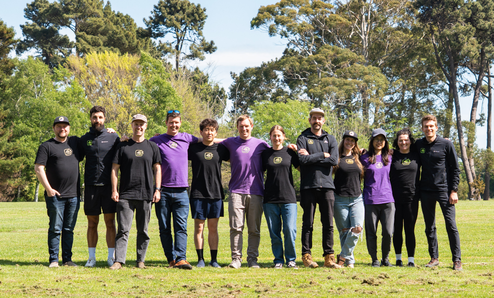
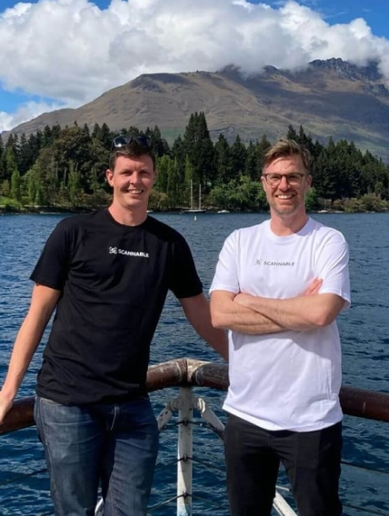
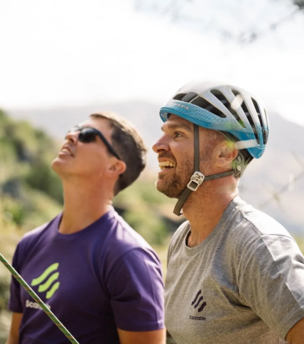

Scannable is founded on the same core principles that we live every day.
Our core values to guide everything we do, because we know this determines the positive impact we have on the people we help, and those who help us
Robert Stirling grew up in the mountains, heading off on adventures on his Dad’s shoulders. The love that grew from these experiences drove Rob to carve out a career in the outdoor world.
Rob has spent his career in design and manufacturing. From outdoor equipment produced in Asia to work at height safety equipment produced in the UK, Rob has a passion to solve technical problems and deliver solutions that matter.
This passion led Rob to launch Scannable in 2020.
Departing from delivering physical products and solutions, Rob’s vision is to empower the digitisation of these same products in the manufacturing and critical equipment world.

Gene Dower joined Scannable as CTO and late-stage co-founder in 2021.
Gene has worked in the New Zealand tech space for more than 15 years, but also knows what it means to trust equipment with his life. Gene’s preferred way to spend a lunch break is paragliding off Bob’s Peak, above the Queenstown Gondola.
